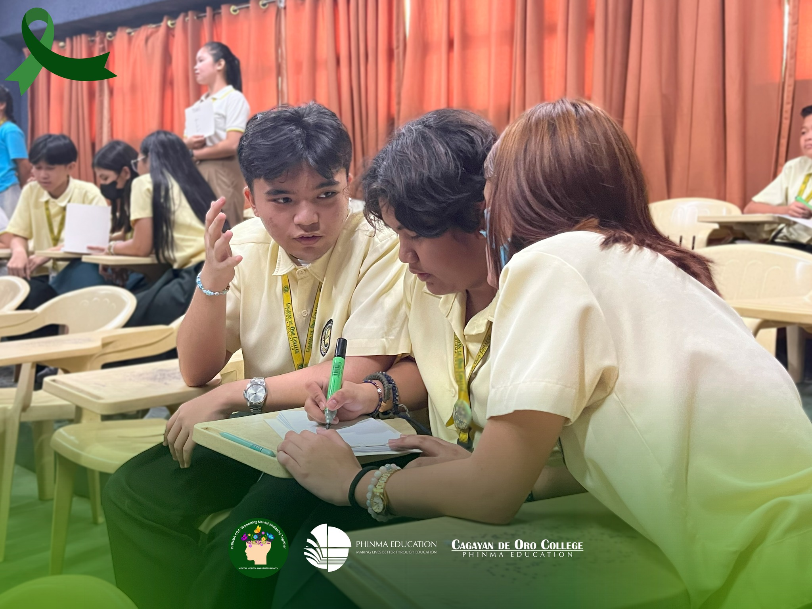

Register your account
Submit personal, academic, and contact information for CSDL to review.
ABOUT THE STUDENT FINANCIAL ASSISTANCE SYSTEM
SFAS brings student loan applications, office reviews, payment updates, and promissory note tracking into one place.
The system organizes the process. Your campus offices review the information and make the decisions.
Meet the offices involved
WHAT THE SYSTEM HELPS YOU DO
From registration to follow-up, each part of SFAS is connected to a specific student need.
Submit personal, academic, and contact information for CSDL to review.
View the balance record prepared by Assessment before requesting assistance.
Explain your circumstances, provide requirements, and propose a payment arrangement.
Check your application’s status and the office handling your request.
Continue loan conversations started by CSDL, Assessment, COO, or Branch Admin.
Follow payment confirmation and promissory note tagging as separate updates.
WHO DOES WHAT
Your request may need different reviews. Endorsements determine which office handles the next stage.
See the review processYOUR FIRST POINT OF REVIEW
Reviews registrations and new loan applications. The team can approve within its authority, return a request for corrections, or endorse it to Assessment.
Registration & initial reviewBALANCES & LOAN REVIEW
Prepares student balances, reviews endorsed applications, and assists with payment arrangements and PN tagging. Requests may be endorsed for further approval.
Balance & PN concernsFURTHER REVIEW & APPROVAL
Review applications endorsed to their office. Officers can discuss the request with the student through a conversation linked to the loan.
Endorsed application concernsPAYMENT CONFIRMATION
Verifies payments and updates the payment record. An advance payment can be reflected while the loan continues through review.
Payment verificationTHREE DIFFERENT MILESTONES
Understanding the difference helps you know when to act and which office to approach.
CSDL has reviewed your registration and you can sign in. Assessment still needs to prepare your balance before you apply.
The reviewing office has approved your request. Read the confirmed arrangement and follow the instructions in your account.
Your payment has been recorded. Continue checking PN tagging and any remaining steps separately.
MAKE YOUR FOLLOW-UP COUNT
Bring your school ID number, application number if available, and a short description of the concern. For payment questions, include your receipt or SIS reference.
If an officer has started a conversation, reply in your student account so the discussion stays connected to the correct application.
Find your support topic